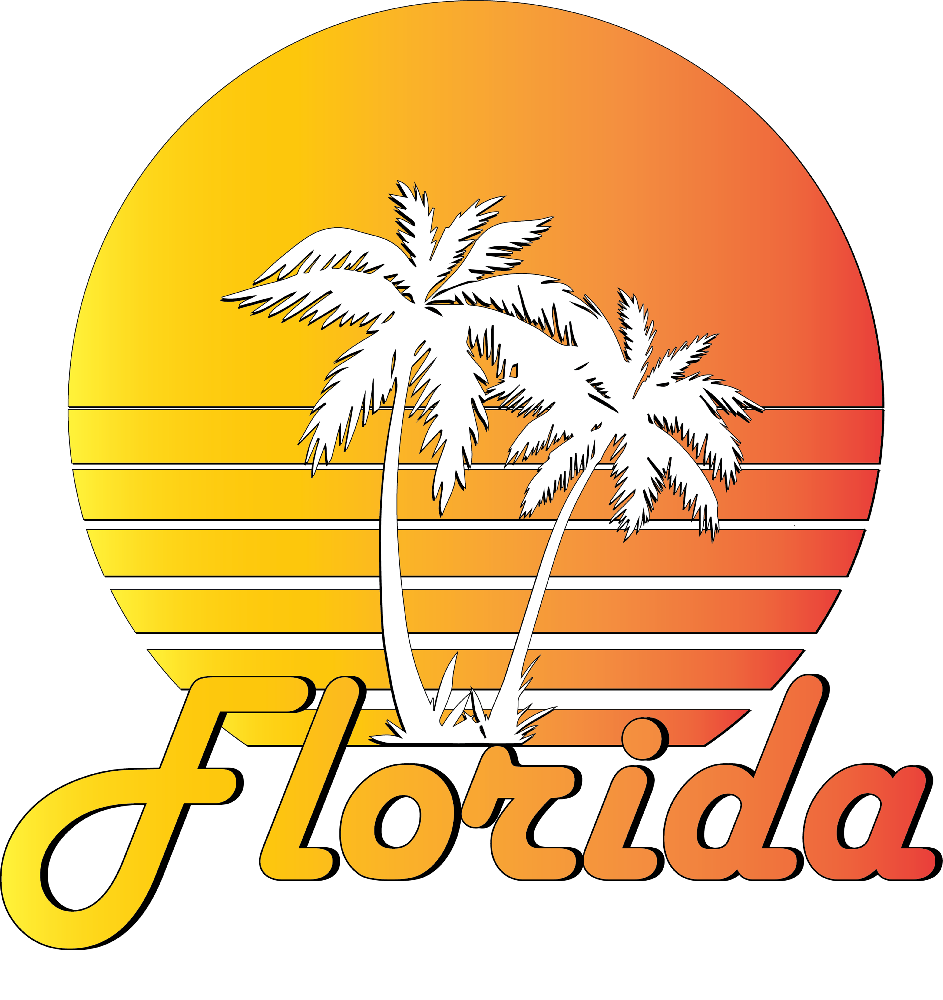
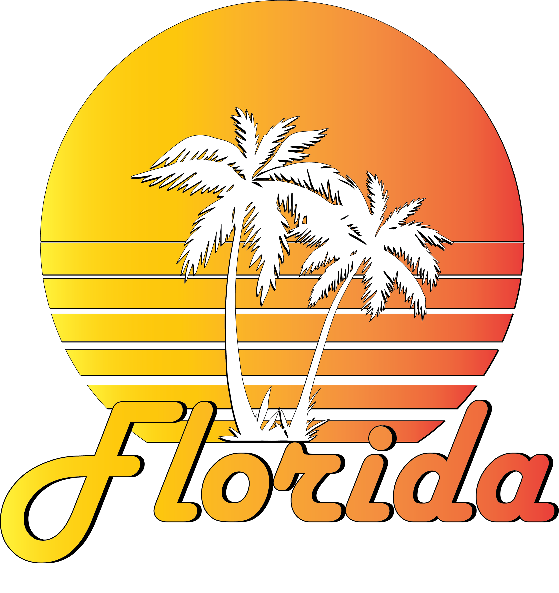

Freedom loving artist eager for an opportunity to prove himself as valuable asset in building a cultural space.
Owner and Chief Graphic Designer of Retro Remnant online store founded in 2022
Experience in multiple industries. Highlights; 2020 Presidential Candidate, The Mises Caucus, financial radio personality Peter Schiff, AV's Custom Trailers, Independent Wrestler Noah Navarre, 2020 Presidential Campaign
Adobe Photoshop
Adobe Illustrator
Communication
Project Management
Critical Thinking
Attention to Detail
Interviewing
Original Designs
 
